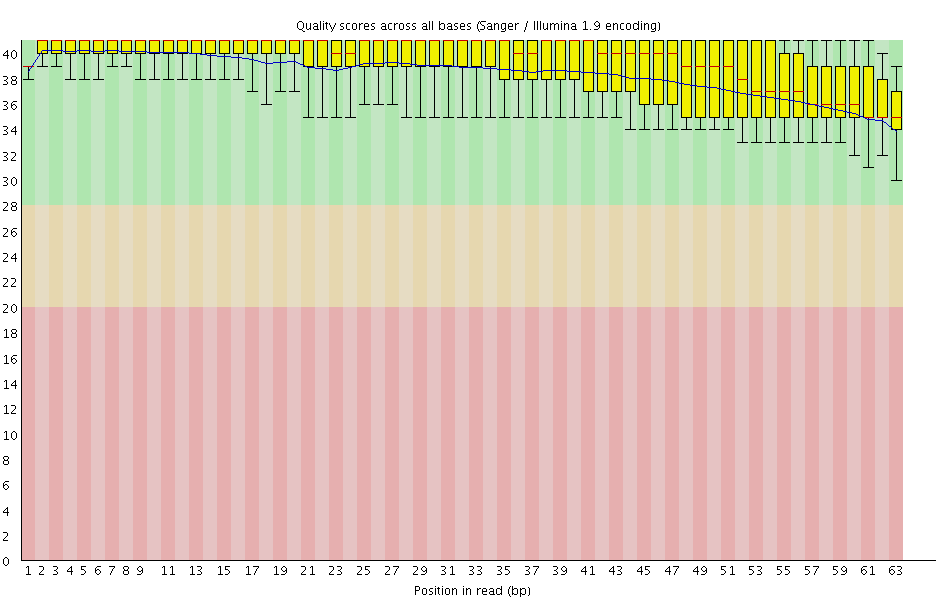
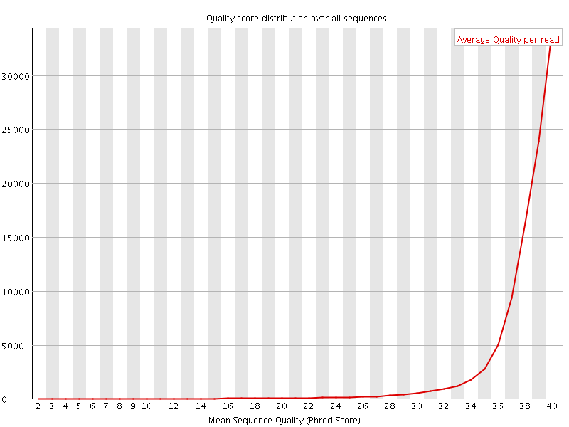
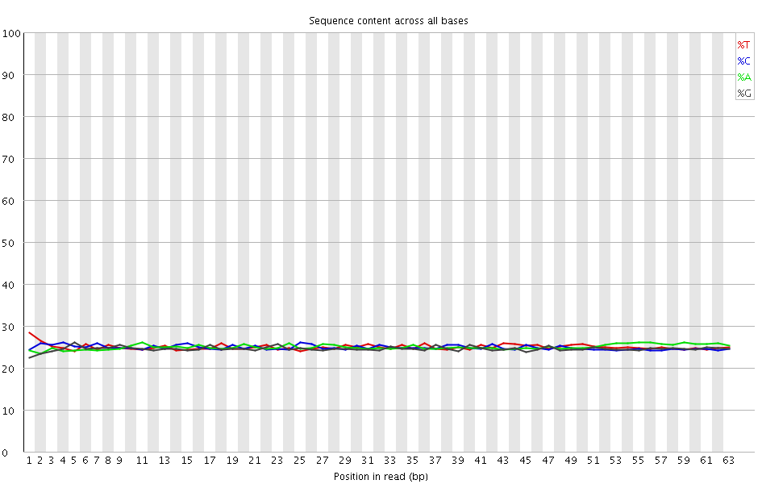
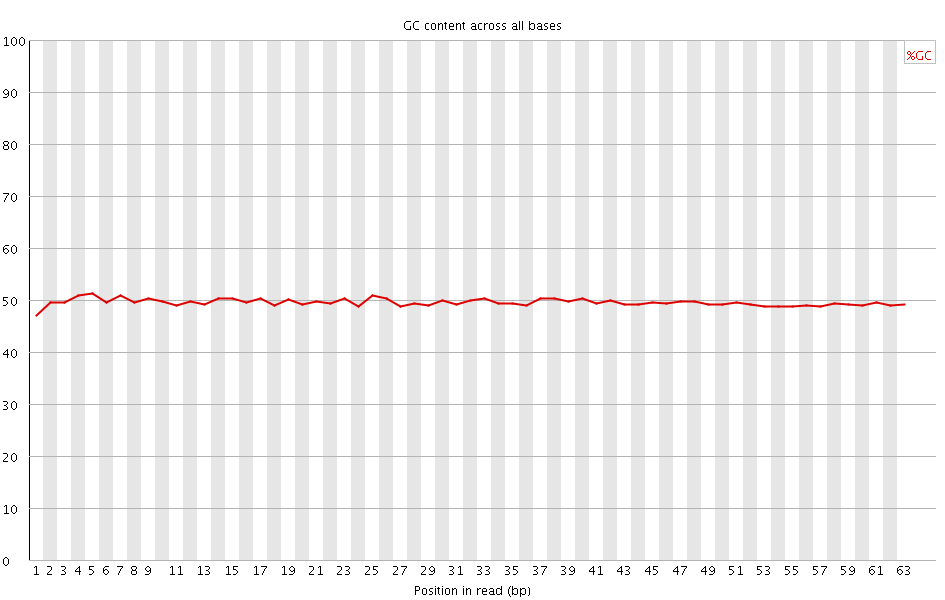
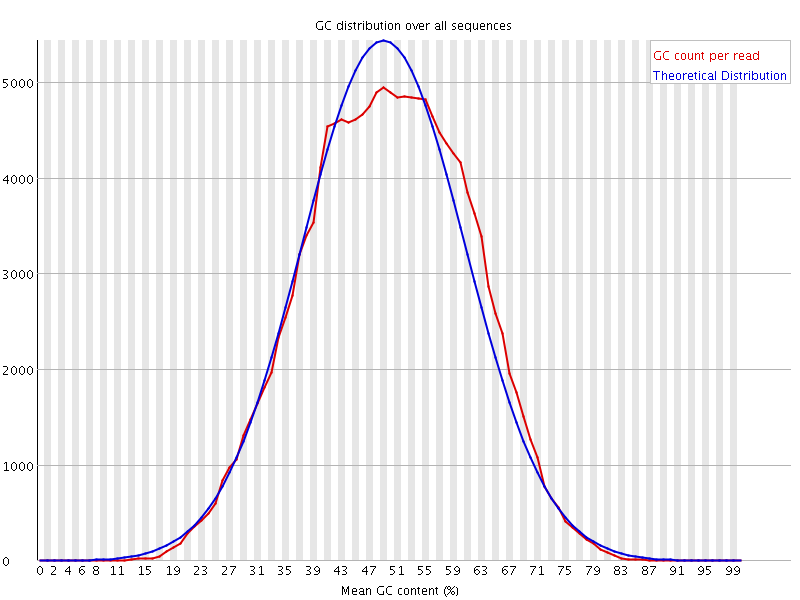
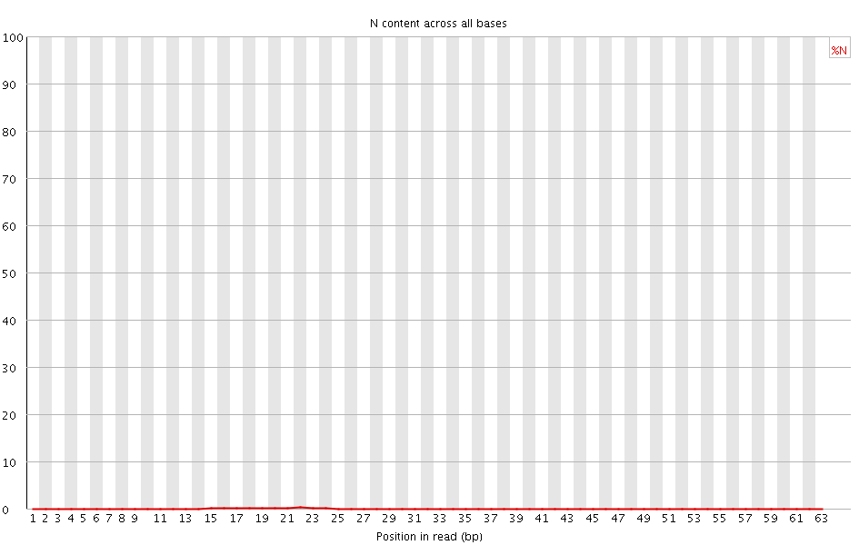
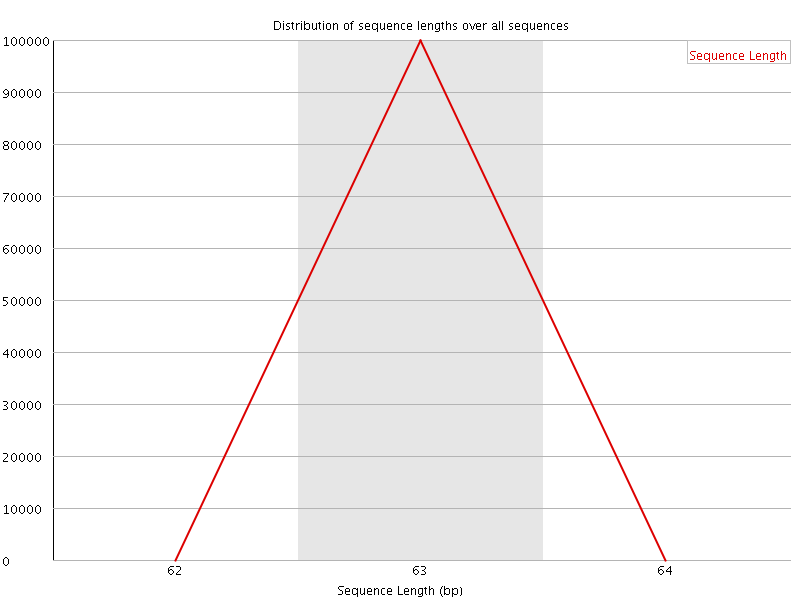
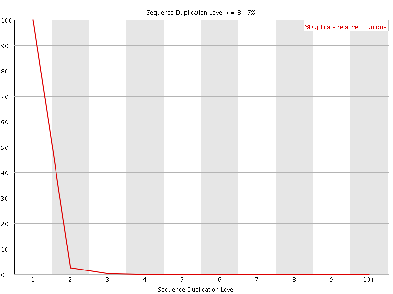
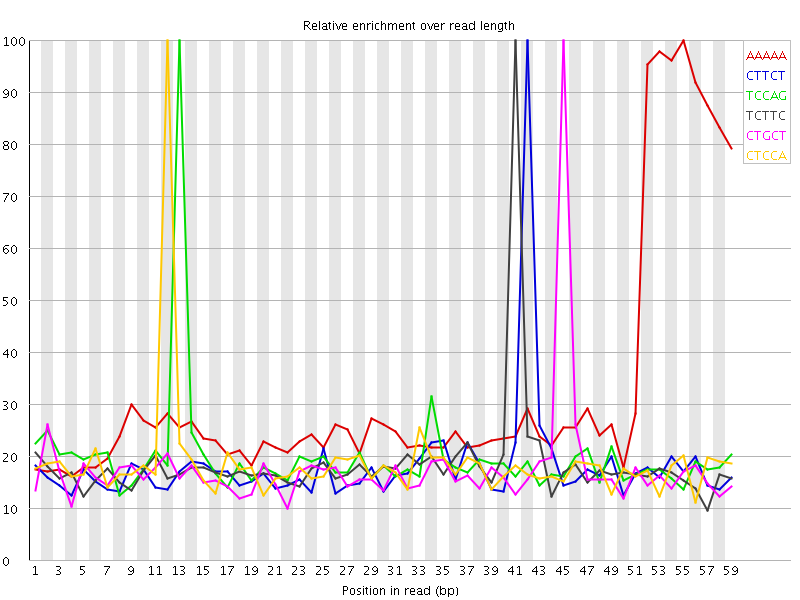

![[OK]](Icons/tick.png) Basic Statistics
Basic Statistics
| Measure | Value |
|---|---|
| Filename | SRR1039509_1.fastq.gz |
| File type | Conventional base calls |
| Encoding | Sanger / Illumina 1.9 |
| Total Sequences | 100000 |
| Filtered Sequences | 0 |
| Sequence length | 63 |
| %GC | 49 |
Per base sequence quality

Per sequence quality scores

Per base sequence content

Per base GC content

Per sequence GC content

Per base N content

Sequence Length Distribution

Sequence Duplication Levels

![[WARN]](Icons/warning.png) Overrepresented sequences
Overrepresented sequences
| Sequence | Count | Percentage | Possible Source |
|---|---|---|---|
| ACACGTCTGAACTCCAGTCACTGACCAATCTCGTATGCCGTCTTCTGCTTGAAAAAAAAAAAA | 601 | 0.601 | TruSeq Adapter, Index 4 (100% over 51bp) |
![[FAIL]](Icons/error.png) Kmer Content
Kmer Content

| Sequence | Count | Obs/Exp Overall | Obs/Exp Max | Max Obs/Exp Position |
|---|---|---|---|---|
| AAAAA | 27675 | 4.688088 | 14.429967 | 55 |
| CTTCT | 14435 | 2.4673183 | 13.502137 | 42 |
| TCCAG | 14020 | 2.4314551 | 12.258988 | 13 |
| TCTTC | 14135 | 2.4160404 | 12.998326 | 41 |
| CTGCT | 13920 | 2.4159598 | 13.659068 | 45 |
| CTCCA | 13370 | 2.289428 | 12.14559 | 12 |
| TTCTG | 12415 | 2.1492045 | 13.062621 | 43 |
| GAAAA | 11420 | 1.9658424 | 11.365537 | 51 |
| CACTG | 11100 | 1.9250466 | 12.268221 | 19 |
| TCTGC | 11030 | 1.9143704 | 12.78939 | 44 |
| CTGAA | 10635 | 1.8382479 | 12.074641 | 7 |
| TGAAA | 10225 | 1.7614815 | 11.324022 | 50 |
| TCTGA | 9635 | 1.6666733 | 12.185855 | 6 |
| TGCTT | 9510 | 1.6463096 | 12.348874 | 46 |
| CCAGT | 9230 | 1.6007369 | 12.00132 | 14 |
| TTGAA | 8610 | 1.4843974 | 10.773678 | 49 |
| GTCTG | 8350 | 1.4677752 | 12.745813 | 5 |
| GACCA | 8245 | 1.4288172 | 12.195911 | 23 |
| ACCAA | 8280 | 1.4120238 | 12.090346 | 24 |
| CTTGA | 8025 | 1.3881736 | 10.962719 | 48 |
| ACTGA | 7945 | 1.3732843 | 11.86916 | 20 |
| TCACT | 7915 | 1.3518455 | 11.879807 | 18 |
| ATGCC | 7785 | 1.350134 | 12.370663 | 35 |
| GCTTG | 7610 | 1.3376971 | 11.606524 | 47 |
| GTCTT | 7685 | 1.3303773 | 11.68492 | 40 |
| CAGTC | 7600 | 1.3180499 | 11.69594 | 15 |
| TGACC | 7600 | 1.3180499 | 11.806237 | 22 |
| CTGAC | 7595 | 1.3171828 | 11.754906 | 21 |
| ATCTC | 7700 | 1.3151245 | 11.377424 | 28 |
| ACTCC | 7395 | 1.2662919 | 11.534842 | 11 |
| AGTCA | 7315 | 1.2643896 | 11.605783 | 16 |
| AATCT | 7350 | 1.2511568 | 11.088581 | 27 |
| GAACT | 7050 | 1.2185847 | 12.228707 | 9 |
| TGAAC | 6930 | 1.1978425 | 11.8199005 | 8 |
| GTCAC | 6540 | 1.1342167 | 11.95243 | 17 |
| AACTC | 6400 | 1.0922545 | 11.420168 | 10 |
| CCAAT | 6210 | 1.0598282 | 11.273187 | 25 |
| CGTCT | 5520 | 0.95805305 | 11.561608 | 4 |
| TGCCG | 4945 | 0.87148297 | 11.687845 | 36 |
| CAATC | 5050 | 0.86185706 | 11.016594 | 26 |
| CACGT | 4575 | 0.79343134 | 11.6550045 | 2 |
| GTATG | 4490 | 0.78662497 | 11.670492 | 33 |
| TATGC | 4430 | 0.7663066 | 11.217106 | 34 |
| CCGTC | 4315 | 0.7508458 | 11.078554 | 38 |
| TCTCG | 4270 | 0.74110264 | 11.050033 | 29 |
| GCCGT | 4185 | 0.7375443 | 11.272278 | 37 |
| CTCGT | 4075 | 0.70725834 | 10.947718 | 30 |
| ACACG | 4020 | 0.69664586 | 11.595013 | 1 |
| ACGTC | 3670 | 0.6364794 | 11.348293 | 3 |
| TCGTA | 2660 | 0.46012983 | 10.911184 | 31 |
| CGTAT | 2300 | 0.39785662 | 10.809211 | 32 |